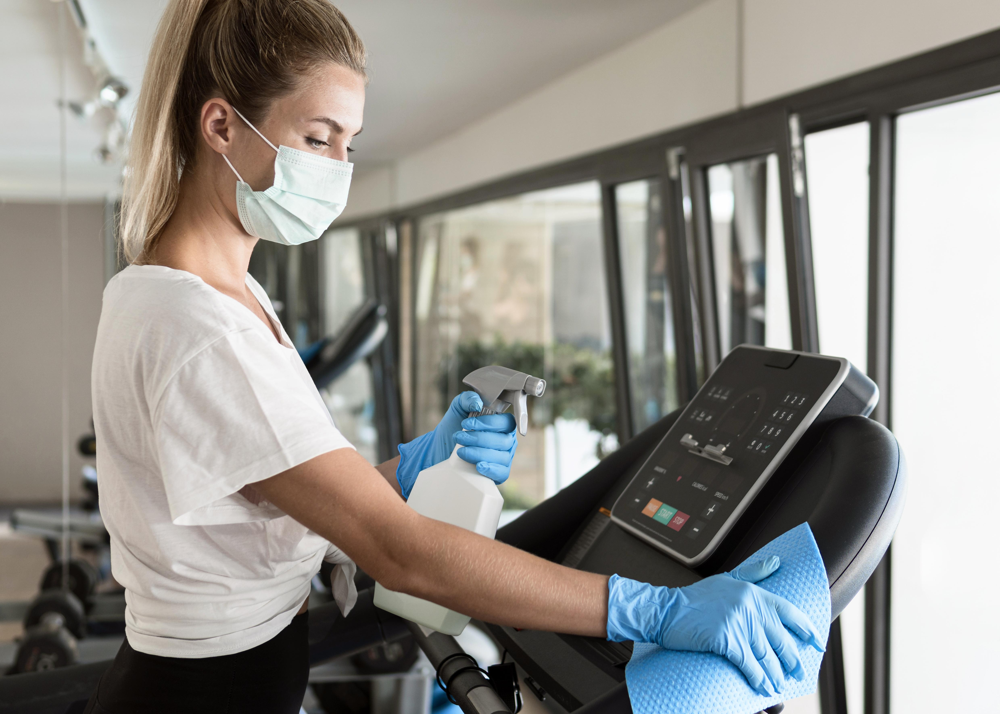

Manter uma academia limpa e higienizada não é apenas uma questão de estética ou conforto. Em ambientes fitness, onde o suor, o contato físico e o compartilhamento de equipamentos são constantes, a biossegurança se torna um pilar fundamental para a saúde dos alunos e a reputação do seu negócio.
Neste guia completo, vamos te mostrar como implementar um protocolo de higienização de alta performance que protege seus clientes, mantém seu ambiente sempre impecável e demonstra profissionalismo em cada detalhe.
1. O Desafio da Biossegurança em Ambientes Fitness
Equipamentos de musculação, tapetes de yoga, halteres e bancos são verdadeiros "hotspots" de contaminação. Cada gota de suor, cada toque nas superfícies, cada respiração intensa durante o exercício cria um ambiente propício para a proliferação de microrganismos.
Foco técnico: O perigo real não está apenas na sujeira visível. Bactérias como Staphylococcus aureus e fungos podem causar infecções cutâneas sérias. Além disso, o odor persistente que muitas academias apresentam não é apenas desagradável – ele é causado por bactérias que se alimentam do suor e dos resíduos orgânicos deixados pelos usuários.
Sem um protocolo adequado de limpeza e desinfecção, sua academia pode se tornar um ambiente de risco para a saúde dos alunos, resultando em problemas que vão desde irritações na pele até infecções mais graves.
2. Check-list de Produtos Indispensáveis

Para garantir uma higienização eficaz, você precisa dos produtos certos para cada tipo de superfície e situação. Organize seus produtos por categoria:
🦠 Desinfetantes Hospitalares (Quaternário de Amônia)
Essenciais para superfícies de equipamentos, pois eliminam microrganismos sem danificar o estofado dos aparelhos. Os quaternários de amônia são seguros para uso em superfícies que entram em contato direto com a pele e oferecem ação residual, mantendo a proteção por mais tempo.
Uso recomendado: Aparelhos de musculação, bancos, esteiras, bicicletas ergométricas e todos os equipamentos compartilhados.
🧼 Detergentes Neutros
Para a limpeza pesada de pisos sem remover o brilho ou causar escorregões. Os detergentes neutros são ideais para pisos de borracha, que são comuns em academias, pois não agridem o material e garantem uma limpeza profunda.
Uso recomendado: Pisos de borracha, áreas de musculação, corredores e espaços comuns.
🪟 Limpadores de Vidro
Para os espelhos, que são um item vital para o aluno conferir a execução do exercício. Um espelho limpo não apenas melhora a experiência do treino, mas também transmite profissionalismo e cuidado com o ambiente.
Uso recomendado: Espelhos das salas de musculação, áreas de alongamento e vestiários.
🌬️ Odorizadores Profissionais
Não apenas mascaram o cheiro, mas neutralizam as moléculas de odor. Produtos profissionais de odorização atuam quimicamente sobre as partículas causadoras do mau cheiro, eliminando-as completamente, não apenas disfarçando.
Uso recomendado: Vestiários, banheiros, áreas de treino e corredores.
3. Frequência e Protocolos

A frequência de limpeza é tão importante quanto os produtos utilizados. Criamos uma tabela prática para facilitar a leitura e implementação do protocolo na sua academia:
| Área/Item | Frequência | Produto Recomendado |
|---|---|---|
| Aparelhos e Pesos | Após cada uso / Diário | Desinfetante Quaternário |
| Vestiários e Banheiros | 3x ao dia (mínimo) | Cloro ou Desinfetante Forte |
| Pisos de Borracha | Diário | Detergente Neutro com Mop |
| Ar-condicionado | Mensal (limpeza de filtros) | Bactericida específico |
| Espelhos | Diário | Limpador de Vidro |
| Tapetes de Yoga/Pilates | Após cada uso | Desinfetante Quaternário |
💡 Dica Importante
Durante horários de pico, mantenha estações de limpeza estratégicas pela academia com toalhas descartáveis e spray desinfetante. Isso permite que os próprios alunos limpem os equipamentos após o uso, criando uma cultura de higiene compartilhada.
4. Dica de Ouro: Treinamento da Equipe
Não adianta ter o melhor produto se a diluição estiver errada ou se o protocolo não for seguido corretamente. O treinamento adequado da equipe de limpeza é fundamental para garantir resultados consistentes.
Dica de Especialista: Use sistemas de dosagem automática. Eles evitam o desperdício de produto e garantem que a concentração seja exata para matar os germes sem causar alergias nos alunos ou danificar os equipamentos.
✨ Checklist de Treinamento
- Diluição correta: Sempre siga as instruções do fabricante. Diluições muito fracas não matam os germes; muito fortes podem danificar equipamentos e causar irritações.
- Tempo de contato: Cada produto precisa de um tempo mínimo de ação para ser eficaz. Respeite esse tempo antes de enxaguar ou secar.
- Ordem de limpeza: Sempre limpe de cima para baixo, começando pelos equipamentos suspensos e terminando nos pisos.
- Panos separados: Use panos de cores diferentes para cada área (ex: azul para banheiros, verde para equipamentos, amarelo para pisos) para evitar contaminação cruzada.
- Documentação: Mantenha um registro das limpezas realizadas, incluindo data, horário e responsável. Isso ajuda a identificar padrões e garantir a consistência.
5. Protocolo de Limpeza Passo a Passo

Para garantir que nada seja esquecido, siga esta sequência lógica de limpeza:
- Remoção de resíduos: Retire toalhas, garrafas e objetos pessoais deixados pelos alunos.
- Limpeza seca: Varra ou aspire o pó e resíduos sólidos dos pisos e equipamentos.
- Limpeza úmida: Aplique o produto de limpeza adequado em cada superfície, respeitando o tempo de ação.
- Desinfecção: Use o desinfetante quaternário em todos os equipamentos e superfícies de contato.
- Enxágue (quando necessário): Alguns produtos requerem enxágue; outros são "no rinse". Siga as instruções do fabricante.
- Secagem: Seque as superfícies com panos limpos para evitar acúmulo de umidade.
- Odorização: Aplique o odorizador profissional nas áreas comuns.
Conclusão
A higienização de alta performance em academias não é um luxo – é uma necessidade que protege a saúde dos seus alunos, preserva seus equipamentos e fortalece a reputação do seu negócio. Com os produtos certos, protocolos adequados e uma equipe bem treinada, você transforma a limpeza em um diferencial competitivo.
Lembre-se: investir em higienização profissional é investir na satisfação e fidelização dos seus clientes. Um ambiente limpo e seguro é um dos principais fatores que os alunos consideram ao escolher uma academia.
Precisa de ajuda para montar o kit completo de produtos para a sua academia? Entre em contato conosco e receba uma consultoria personalizada sobre os melhores produtos para o seu tipo de estabelecimento.
🚀 Conheça Nossos Produtos para Academias
Agora que você entende a importância da higienização profissional em academias, descubra nossa linha completa de produtos desenvolvidos especificamente para ambientes fitness.
Oferecemos desinfetantes quaternários, detergentes neutros, limpadores de vidro, odorizadores profissionais e muito mais para garantir a biossegurança e o conforto dos seus alunos.
Ver Produtos